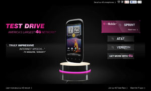
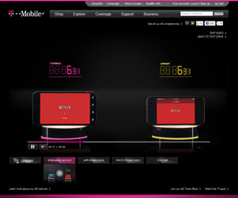
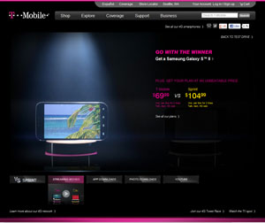

- 
- 
- 
I led the development and architecture of T-Mobile's Testdrive, a web app showcasing T-Mobiles network speed versus other carriers. The visual design was a collaboration between GLG and Publicis.
Highlights
- Fast. The application utilized a host of optimization techniques to load fast and react fast. These include using CSS animations for browsers that support it, lazy-but-anticipated loading, and caching all around.
- Seamless. The entire experience is one. No page loading, and smooth transitions between states -- all without sacrificing the back button or deep-linking URLs.
- Scaled. We load tested this with thousands of connections and the servers barely blinked. Granted, it was all a client-side app.
Technologies Used
- CSS3, HTML5, jQuery, Backbone, Underscore.js, Mustache, lots of custom JavaScript
- C# with ASP.NET 3.5, ASP.NET MVC 3 (utilizing Razor View Engine)
- Load-balanced IIS 7 servers